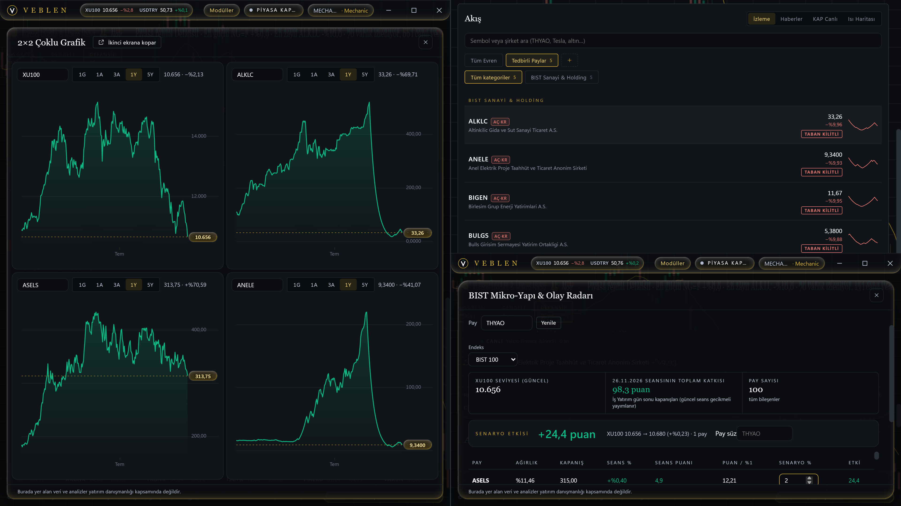

Dört motor
Ekranlar çalışan uygulamadan, canlı ve herkese açık veriyle alınmıştır. Çok panelli görseller farklı ekranları yan yana gösterir.




Borsa İstanbul, küresel piyasalar ve TEFAS için yerel çalışan Windows terminali. Hesaplar Rust çekirdeğinde yapılır; portföyünüz, defteriniz ve notlarınız bilgisayarınızda kalır.
SHA-256 parmak izi · VEBLEN_3.2.1_x64-setup.exe · 27 Kasım 202659df1b6a2c055c343f4bea56dd400d185bc40646d934ca7b1f372673fe2ed881
Ticari yazılımdır; erişim anahtarı gerekir. Veri ve analizler yatırım danışmanlığı değildir; uygulama emir göndermez.
Küçük, yerel ve sayıların nereden geldiğini açıkça söyleyen bir terminal.
| VEBLEN | Tipik Electron / web terminali | |
|---|---|---|
| Motor | Rust çekirdeği + Windows'un hazır sunduğu WebView2 | Kendi Chromium ve Node.js'ini taşır ya da tarayıcı sekmesinde yaşar |
| Kurulum paketi | 6,4 MB | Tarayıcı motorunu da taşımak zorunda |
| Bellek, canlı veriyle komuta ekranı | 192 MB özel çalışma kümesi, 7 süreç (küçültülmüşken 180 MB) | Burada ölçülmedi |
| Başlatmadan ilk görüntüye | ≈ 1,10 sn (sıcak disk önbelleği) | Burada ölçülmedi |
| Bilanço doğrulaması (BIST sanayi) | İki kaynak karşılaştırılır. Yıl sonu sütunu ara dönemlerden farklı bir enflasyon muhasebesi (TMS 29) tabanındaysa kaynak değiştirilir ve belirtilir. Tutarlar asla yeniden ölçeklenmez | Veri sağlayıcısına bağlı |
| Kayıtlarınız | Portföy, defter ve notlar yerel SQLite veritabanında | Ürüne bağlı |
v3.2.1 ölçümü, 27 Kasım 2026 (AMD Ryzen 5 5600X 6-Core Processor, 32 GB RAM, Windows 11 Pro). Bellek: VEBLEN ve WebView2 alt süreçlerinin özel çalışma kümesi, komuta ekranı oturduktan 60 sn sonra. İlk görüntü: yeniden başlatma yapılmadan beş açılışın ortancası, aynı kodun sınama derlemesinde. Başka ürünler ölçülmediği için onlar adına sayı verilmez.
Ekranlar çalışan uygulamadan, canlı ve herkese açık veriyle alınmıştır. Çok panelli görseller farklı ekranları yan yana gösterir.

Bulanıklık yok: renk ayrışmalı kenar ve parlak çerçeveli SVG mercek, MIT lisansıyla iki dosyada. Bu panel ve üstteki çubuk onu kullanıyor.
<link rel="stylesheet" href="liquid-glass.css"> <div data-liquid-glass>Merhaba</div> <script src="glass.js"></script>
Son sürümlerde değişenler.
Windows 10 ya da 11, x64.
VEBLEN_3.2.1_x64-setup.exe. Get-FileHash .\VEBLEN_3.2.1_x64-setup.exe sonucunu üstteki parmak iziyle karşılaştırın.
SmartScreen çıkarsa parmak izi eşleştikten sonra: Ek Bilgi → Yine de Çalıştır. Güncellemeler yalnız imzası doğrulanırsa kurulur.
Bir anahtar bir bilgisayara bağlanır. Anahtar talep edin. Lisans sunucusu anahtarınızın özetini ve özetlenmiş cihaz kimliğini alır.